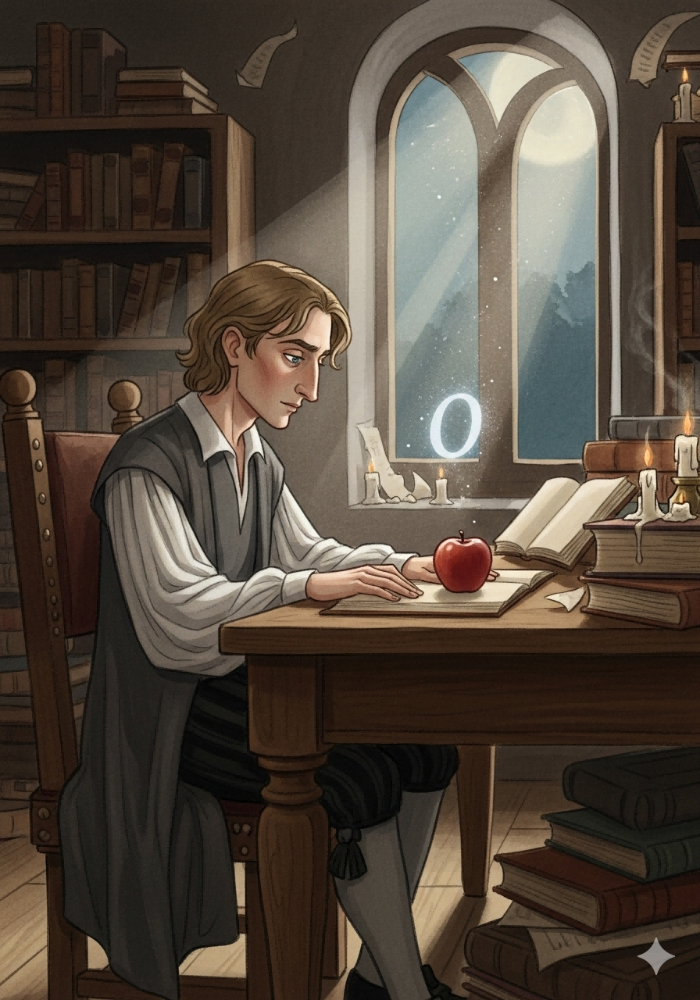
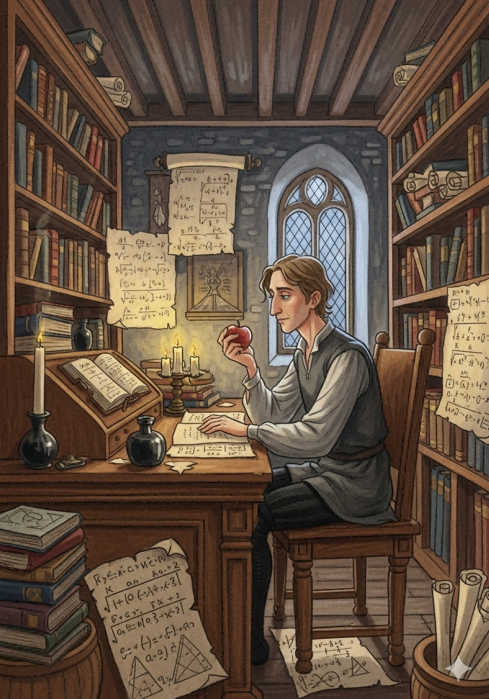
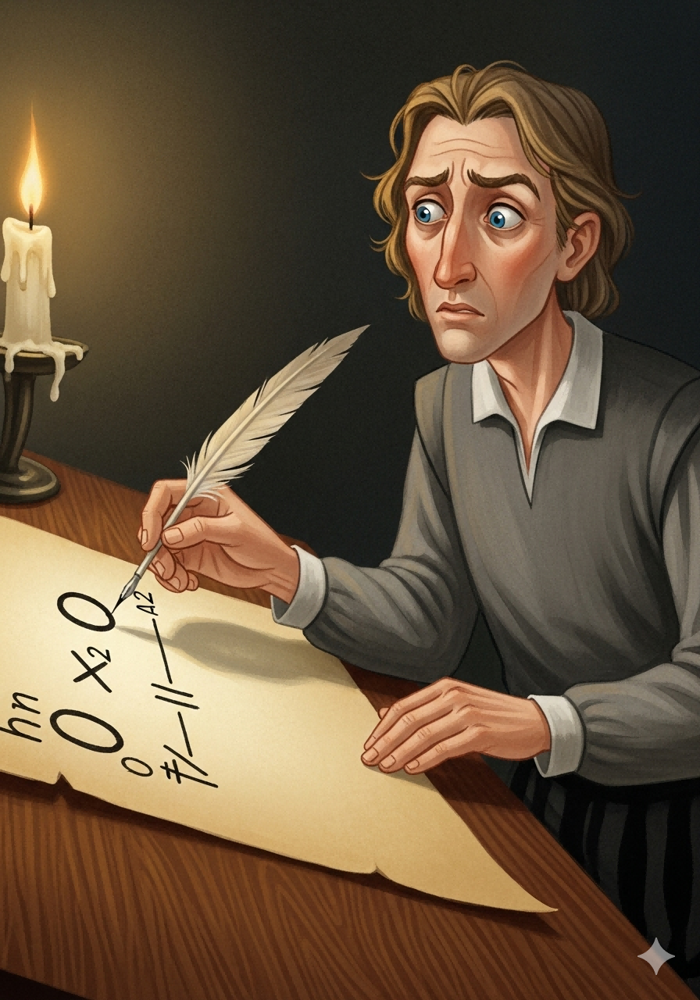
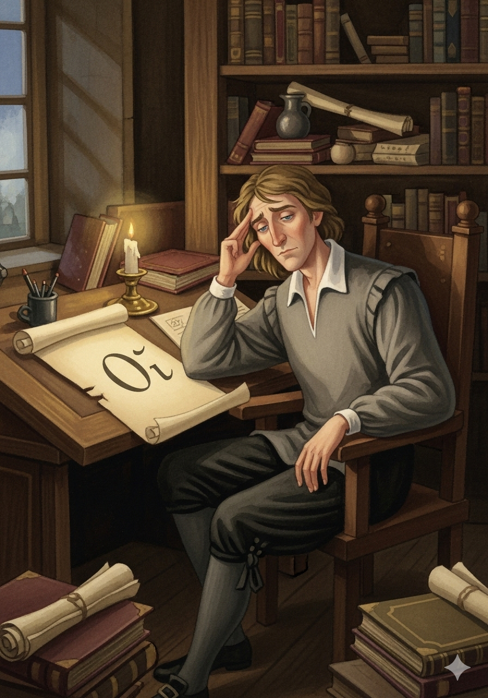
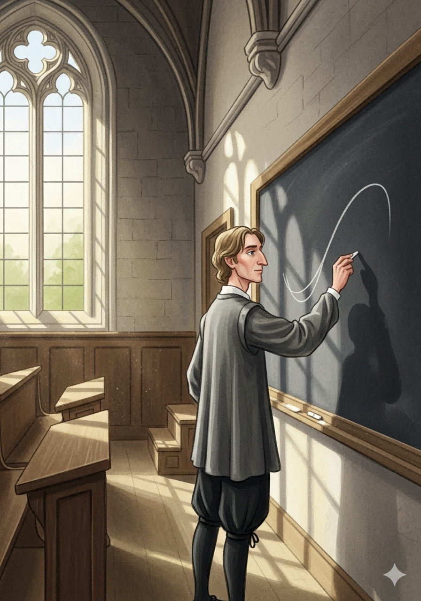
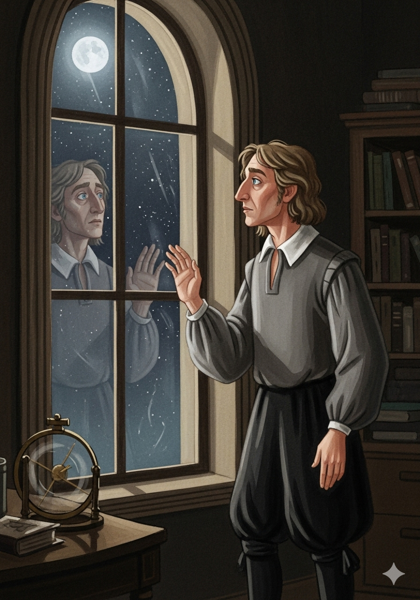

与幽灵共舞
牛顿微积分的逻辑挑战
向下滚动，开启故事

故事要从古老的剑桥大学说起，那时的艾萨克·牛顿，还是一位风华正茂的青年。他的思绪并未停驻于凡尘俗世，而是早已飞向了皓月星辰。

当他凝视着苹果从枝头坠落，一个深邃的问题在他脑海中萦绕：世间万物的运动规律究竟为何？要精确描述一个变化的瞬间，他需要一种前所未有的数学工具。

牛顿构想，一条曲线的轨迹，无非是一个点的连续运动。他将这个点在任意瞬间的速度称为"流数"。为了捕捉这个瞬时速度，他必须观察极其微小的时间与距离。

他将这套方法命名为"流数法"——这便是我们今天所熟知的微积分的雏形。其核心思想，是用无穷分割的方式逼近真实运动。
0/0

乔治·贝克莱主教洞悉了这个逻辑漏洞，嘲讽这些无穷小量是"早已消失无踪，却又阴魂不散的幽灵"。

贝克莱认为，牛顿的计算过程不过是一种逻辑戏法。这个批评深深刺痛了牛顿，因为他内心清楚，贝克莱的质疑切中了要害。
面对挑战，牛顿提出了"最终比"的概念。他其实已在竭力描绘"极限"的轮廓，但在那个时代，数学的语言尚不足以清晰地定义它。
尽管在逻辑上备受争议，但牛顿"流数法"所展现出的磅礴伟力，却是任何人都无法忽视的。它能精确描绘月亮的轨迹，计算石子抛出的弧线。

牛顿勇敢地与那些"阴魂不散的幽灵"共事，并最终赠予了世界一种全新的、理解宇宙万物运动规律的强大视角。这不仅是数学的胜利，更是人类理性精神的伟大胜利。
完
与幽灵共舞，开启了数学新纪元